Homepage concepts
Concepts 1–4 are the original four directions; 5–7 are Apple-inspired (principles only: no Apple assets, typefaces or copy). Same content strategy, products and facts in each; everything visual and tonal is different. Desktop (1440px) and mobile (390px), full page, at thumbnail size. Click through for the full page or the design sheet.
1. The Journal
Editorial / journal. A print golf journal: cover, contents, numbered features and listings rather than card grids.
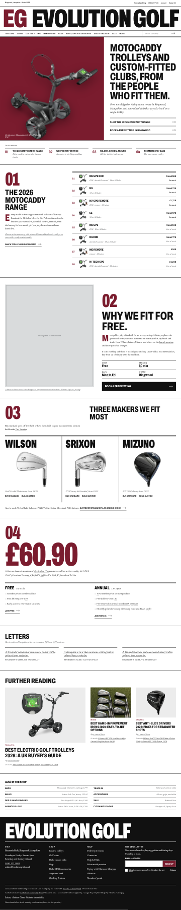
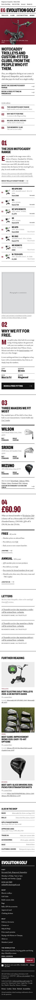
2. The Lab
Performance lab. Dark, data-led and precise. Fitting is the hero; trolleys are a spec sheet; numbers are the decoration.
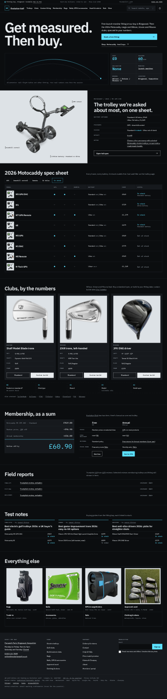
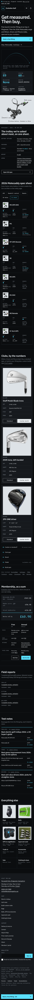
3. Block
Bold modern retail. Colour-blocked, product-led and fast: a three-tap trolley finder and a big-image shelf, closer to a design retailer than a golf shop.
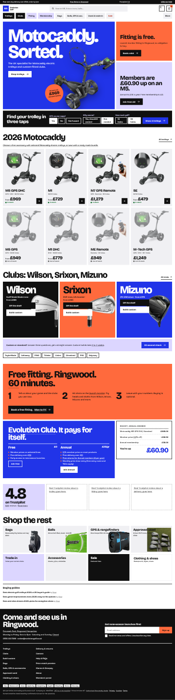
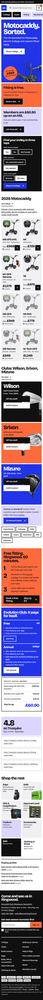
4. The Local
Local expert. Warm and human: the people, the Ringwood centre and the New Forest lead; membership is belonging to a club.
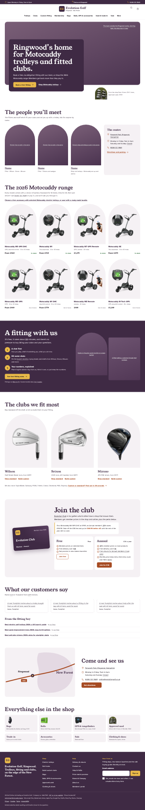
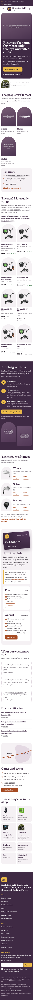
5. Showroom
Apple-inspired: product tiles. Apple-inspired. A stack of full-width, centred tiles, one product or service per tile, two quiet links each. The products do the talking.
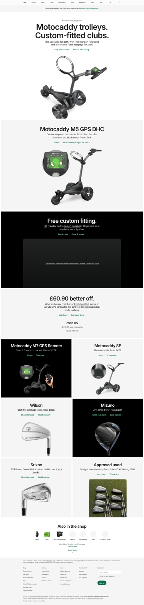
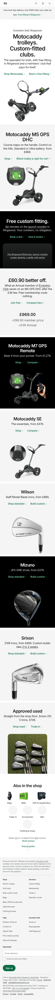
6. Keynote
Apple-inspired: product storytelling. Apple-inspired. A dark, cinematic scroll: one big statement, a product reveal, feature highlights, big numbers and a four-model compare row.
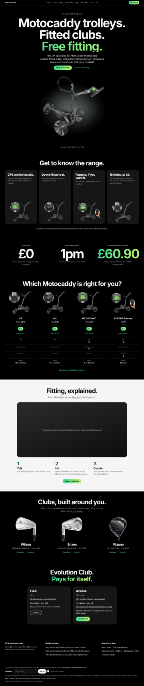
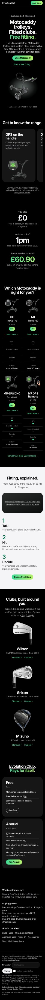
7. Store
Apple-inspired: shop shelves. Apple-inspired. A shop page: a picture-led category row, then themed horizontal shelves of large cards for trolleys, help, clubs, membership and guides.
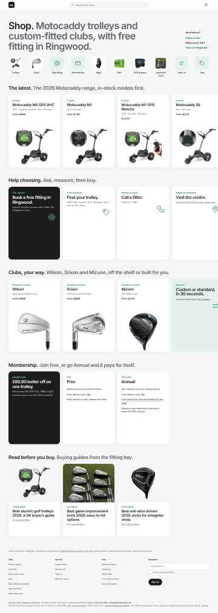
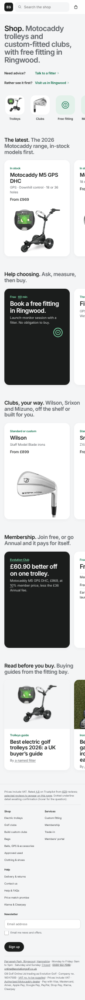
8. Showroom+
Recommended combination: Showroom base + Keynote compare + The Local’s fitting. Showroom’s calm, one-idea-per-screen tiles, with Keynote’s compare row (light) and The Local’s people-led fitting section, in Evolution’s own green.
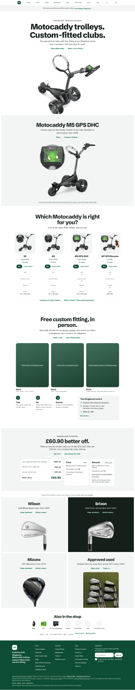
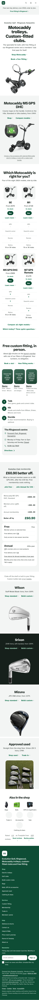
9. Showroom+ v2
Showroom+ rebalanced: national, with Motocaddy, custom clubs and the members’ area as the three pillars. Showroom+ rebalanced for a UK-wide audience: Motocaddy, custom clubs built online and the members’ area lead; fitting is a ‘near Ringwood?’ option.
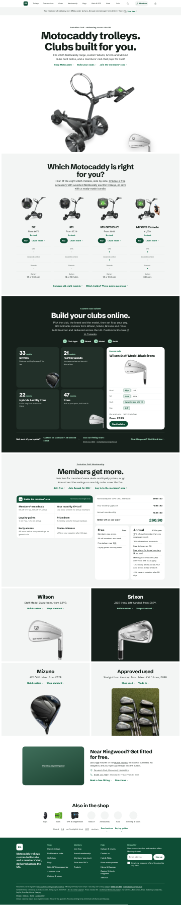
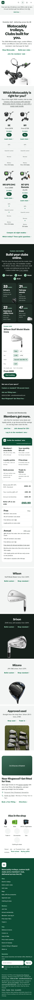
| Concept | Trolley specialism | Fitting | Membership | Premium feel | Build complexity | Photography it depends on |
|---|---|---|---|---|---|---|
| 1. The Journal | ●●●●● | ●●●●● | ●●●●● | ●●●●● | Medium | High: commissioned lifestyle and fitting photography |
| 2. The Lab | ●●●●● | ●●●●● | ●●●●● | ●●●●● | Medium–high | Low–medium: cut-outs plus technical bay shots |
| 3. Block | ●●●●● | ●●●●● | ●●●●● | ●●●●● | Medium | Low: cut-outs already available |
| 4. The Local | ●●●●● | ●●●●● | ●●●●● | ●●●●● | Low–medium | High: people, centre and local course photography |
| 5. Showroom | ●●●●● | ●●●●● | ●●●●● | ●●●●● | Low | Medium: one fitting-bay photo; renders help |
| 6. Keynote | ●●●●● | ●●●●● | ●●●●● | ●●●●● | Medium | Medium: studio renders of trolleys on black |
| 7. Store | ●●●●● | ●●●●● | ●●●●● | ●●●●● | Low–medium | Low: cut-outs already available |
| 8. Showroom+ | ●●●●● | ●●●●● | ●●●●● | ●●●●● | Low–medium | Medium: three portraits and the fitting bay |
| 9. Showroom+ v2 | ●●●●● | ●●●●● | ●●●●● | ●●●●● | Medium | Low: one fitting-bay photo |
Scores are my judgement of how strongly each homepage communicates each job, not a recommendation; 5 = strongest. Build complexity is relative to a standard Shopify OS 2.0 theme build.
A possible hybrid: The Local’s first screen and voice (the team, the Ringwood centre, membership as a club, Atkinson Hyperlegible for older trolley buyers) combined with The Lab’s working tools further down (the Motocaddy spec table, real loft/shaft data on clubs, and membership shown as a sum). The warmth earns trust and bookings; the precision does the selling once someone is comparing £500 to £1,500 trolleys. Block’s three-tap trolley finder could slot in above the spec table without changing either look much.